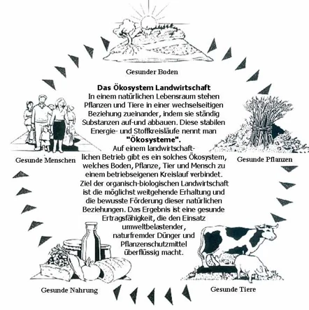
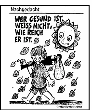

Einleitung
Für mich als Landwirt (Dipl. Ing. agr.) und Heilpraktiker beginnt die eigentliche Naturheilkunde in der Natur, genauer gesagt in der Landwirtschaft. Aber gerade hier haben wir uns in den letzten Jahrzehnten sehr von der Natur entfernt und glaubten, mit der chemischen Keule alles besser machen zu können. Von der Beizung des Samenkorns beim Züchter angefangen, über den Landwirt, Landhandel, Müller und Bäcker wird „Unser tägliches Brot“ heute ca. 20 x mit chemischen Mitteln behandelt. Weniger Chemie wäre nicht nur ein Segen für die Landwirtschaft, sondern auch für die Gesundheit der Menschen und der Umwelt. Durch die zunehmende Intensivierung der Landwirtschaft, die Verlagerung von der Humus- zur überhöhten Mineraldüngung, verbunden mit verstärkter chemischer Unkraut- und Schädlingsbekämpfung, werden die natürlichen Lebensgemeinschaften (Symbiosen) unserer Böden zunehmend gestört. Wenn der Boden krank ist, wird auch der Mensch nicht mehr lange gesund sein, denn vollwertige Lebensmittel – wichtigste Voraussetzung für die Gesundheit – können nur auf fruchtbarem, gutem Erdreich wachsen. Die Verwendung von Pestiziden (Schädlingsbekämpfungsmittel) vergiften unseren Organismus und lähmen so unser Nervensystem. Unerklärliche Müdigkeit, Vergesslichkeit, Depression können die Folge sein. Hinzu kommt die doppelte Problematik des Kunstdüngers: Er treibt sowohl die Nahrung als auch jede einzelne Zelle des Menschen auf. Dieses übertriebene Wachstum ohne natürliche Stabilität gleicht einem Weizenhalm, der schon bei geringer Windstärke wie ein Streichholz umfällt. Kunstdünger kann auf Dauer die Bodenfruchtbarkeit nicht erhalten. Nur organischer Humus kann Leben schaffen.
Wie im ganzen Leben, so auch hier - alle Extreme taugen nichts.
Wir sollten den goldenen Mittelweg beschreiten. Lasst uns den integrierten und organisch biologischen Landbau weiter vorantreiben. Wir sollten die Errungenschaften des 20. Jahrhunderts in puncto Technik und Chemie mit Maß und Ziel nutzen, dabei aber die Überlieferungen und Erfahrungen der Naturheilkunde und des biologischen Landbaues nicht außer acht lassen. Es muss endlich Schluss sein, mit immer mehr Chemie, immer mehr Nahrungsmittel zu produzieren, die mit immer mehr Mitteln des Steuerzahlers vernichtet werden! (Edmund Stoiber). Sollte es uns gelingen, all diese Faktoren (siehe Abbildung) wieder in Ordnung zu bringen, so wäre dies ein großer Segen für die gesamte Menschheit und Umwelt.

Anmerkung/Ergänzung zu dieser Grafik
Gesunder Boden: Er ist die Grundlage für gesunde Pflanzen - und somit für eine gesunde Ernährung. Hebt man nur 1 qm guten und gesunden Boden 30cm tief aus, findet man darin circa :
- 80 Regenwürmer
- 50 Asseln
- 50 Spinnen
- 100 Käfer
- 100 Larven
- 10.000 Borstenwürmer
- 50.000 Springschwänze
- 1 Million Fadenwürmer und
- Milliarden von Algen, Pilzen und Bakterien (3 SAT Böden im Burnout vom 08.04.2021).
Diese natürliche Symbiose von natürlichen Lebewesen im Boden nennt man Mikrobiom und sollte nicht durch den Einsatz hochgiftiger Pestizide reduziert bzw. vernichtet werden. Ansonsten kommt es zu gravierenden, negativen Langzeitfolgen. Hinweis: Dieses Mikrobiom im Boden und unser Mikrobiom im Darm haben die gleiche Funktion. Die Frage ist, wie sich Pestizide und Überdüngung (um hohe Erträge zu erzielen) auf die Umwelt und die Gesundheit des Menschen langfristig auswirken.
Nitrat → Nitrit → Nitrosamine → Krebs
Nitrat - die unsichtbare Gefahr in Trinkwasser und Nahrung. Von allen Verunreinigungen, die durch Stickstoff in Form von Nitratdünger - wie z.B. Kalkammon-Salpeter - in den Boden gelangen, gehören Nitrate zu den gefährlichsten. Anmerkung: In diesem Kunstdünger sind zwar Nährstoffe für die Ackerpflanzen, aber kein „Futter“ für das Bodenleben enthalten. Nitrat wird mit Hilfe spezieller Bakterien in -Nitrit umgewandelt. Dieser Vorgang geschieht allerdings nicht nur in den Pflanzen. Auch im Boden, in Nahrungsmitteln, in Gewässern und im menschlichen Körper wird Nitrat zu Nitrit reduziert. Wenn Nitrit und Amine (Verbindungen, die in eiweißhaltigen Lebensmitteln, wie Fleisch, Wurst und Käse vorkommen) am selben Ort sind, können diese eine Verbindung eingehen. Dabei entstehen -Nitrosamine, die krebserregend sind. Die Bildung erfolgt nur unter bestimmten Voraussetzungen, vor allem im sauren Milieu, wie es im menschlichen Magen herrscht. Anmerkung: Nitrate und Nitrite werden auch in Fleischerzeugnissen während der Verarbeitung zur Unterdrückung des Wachstums von Bakterien und für die Verstärkung der Farben hinzugesetzt. Der dauerhafte Verzehr von Produkten mit einem hohen Gehalt an Nitraten erhöht das Risiko für Krebs, Alzheimer und Diabetes. Die organisch-biologische Wirtschaftsweise ohne Agrarchemikalien vermeidet zusätzliche Belastungen von Boden und Wasser, erhält die Artenvielfalt wild lebender Pflanzen und Tiere und schont Rohstoff- und Energieressourcen. Durch ökologischen Landbau tragen wir entscheidend zur Sicherung des Trinkwassers und aller weiteren Lebensgrundlagen für uns und zukünftige Generationen bei. Gesunde Pflanzen: Pflanzen nehmen Kohlendioxid aus der Luft auf. Mit Hilfe von Wasser und Sonnenlicht produzieren sie - mit der sogenannten Photosynthese - energiereiche Glucose. Diese chemische Reaktion ist die Grundlage allen Lebens auf der Erde. Und nebenbei entsteht Sauerstoff, den wir - und alle anderen Lebewesen - zum Atmen benötigen. Wurzeln haben die Aufgabe, Pflanzen mit Nährstoffen zu versorgen und den Boden zu stabilisieren. Sie machen über die Hälfte einer Pflanze aus und sind teilweise unsichtbar. Ihre Kräfte helfen, Probleme des Klimawandels und des Umweltschutzes zu bewältigen. Unser Getreide ist für optimalen Ertrag unter optimalen Bedingungen gezüchtet. Es ist aber den Herausforderungen von Klimawandel und ausgelaugten Böden nicht mehr gewachsen. In der auf Massenerträge ausgelegten, konventionellen Agrarwirtschaft wird der Boden nicht nur intensiv beackert, sondern auch ausgezehrt. Die Vielzahl von Lebewesen und Wurzeln - wie bei einer biologischen Bewirtschaftung - findet man dort nicht. (Weltretter Wurzeln - Das Wunder unter der Erde - 3 SAT vom 15.04.2021) Die Wahrheit über Pestizide: Die Agrarindustrie behauptet, ohne Pestizide ginge es nicht. Das ist eines von vielen Märchen, die sich leicht entzaubern lassen. Die Wahrheit sieht anders aus. So haben Bio-Firmen und gemeinnützige Organisationen in ganz Deutschland die Luft auf chemisch-synthetische Pestizide untersucht. Das Ergebnis schockiert: Ackergifte sind überall in unserer Atemluft, auch im Sand des Kinderspielplatzes und natürlich auf unseren Lebensmitteln. Immer mehr ökologisch wirtschaftende Betriebe können ihre Erzeugnisse nicht mehr als Bioprodukte verkaufen, weil in ihnen Pestizide nachweisbar sind, die vom Wind auf ihre Felder geweht wurden. Es wurden sogar mehrfach Pestizide gefunden, die gar nicht mehr zugelassen sind. Europäische Unternehmer exportieren im großen Stiel Pestizide nach Südamerika, Afrika und Südostasien, die in der EU zu Recht verboten sind. Sie kommen dann auf Südfrüchten zurück zu uns, was für ein Wahnsinn. Glyphosat - zur Geschichte - 1974 brachte Monsanto das Unkrautvernichtungsmittel „Roundup“ auf den Markt und hatte damit sofort Erfolg. Anders als die meisten Herbizide, die nur auf bestimmte Pflanzenarten oder Pflanzenfamilien wirken, tötet Roundup alle Pflanzen ab (Totalherbizid). 1996 landet Monsanto den nächsten Coup mit genmanipuliertem Saatgut. Glyphosat kann diese Kulturpflanzen nicht mehr schädigen, tötet Unkraut aber weiterhin ab. Rund 200 verschiedene Kulturarten, darunter alle Hülsenfrüchte und Getreidearten werden kurz vor der Ernte noch einmal mit Glyphosat als Reifebeschleuniger besprüht, um die Ähren zu trocknen, das Abreifen der Getreidekörner zu beschleunigen sowie vor Schwarzrost/Pilzerkrankungen zu schützen. Neueren Studien zufolge ist davon auszugehen, dass bei 99,6 % der deutschen Bevölkerung Spuren von Glyphosat im Urin enthalten sind (siehe Allergie). Das dürfte keinen überraschen, denn Glyphosat ist der Hauptbestandteil des beliebtesten Herbizids (Unkrautbekämpfungsmittel) weltweit - auch in Europa. Es wird von über 40 Herstellern angeboten und ist in 300 verschiedenen Produkten erhältlich. Das Umweltinstitut München wies Glyphosat auch in 14 bekannten Bieren deutscher Brauereien nach. Den höchsten im Bier festgestellten Wert überstieg dem von Trinkwasser um das 300-fache. (Teilweise entnommen aus Arte- „Gluten, der Feind in deinem Brot“ vom 13.04.2021). Eine Forschungsstudie, die jüngst von Bundesumweltministerin Svenja Schulze (SPD) vorgelegt wurde legt nahe, dass über ganz Westeuropa eine Decke von Pestiziden - auch über Naturschutzgebieten liegt (Rhein-Zeitung vom 12.04.2021). Anmerkung: Am 14.09.2016 ging der US-Saatgutriese Monsanto für mehr als 60 Milliarden Dollar an den Leverkusener Agrarchemie- und Pharmakonzern Bayer. Durch diese Akquisition stieg der DAX-Konzern schlagartig zum größten Anbieter von Saatgut und Pflanzenschutzmitteln auf. (Rhein-Zeitung vom 14.09.2021) Umweltschutz: Landwirte, die Umweltleistungen erbringen, sollen künftig mehr Fördergeld aus EU-Töpfen erhalten, etwa für den Verzicht auf den Einsatz von Pestiziden oder das Anlegen von Brachen zum Schutz von Bienen (Rhein-Zeitung vom 13.04.2021). Dass es auch ohne Pestizide geht, beweisen biologisch, wirtschaftende Landwirte, wie z.B. Armin Metzler, Landwirt und Winzer aus Spiesheim bei Alzey. „Wir gehen über Bodengesundheit, statt Pestizide“.Seit 2012 arbeitet Metzler komplett biologisch und das auf 230 Hektar Ackerflächen in Rheinhessen. Sein „Geheimnis“ ist die Fruchtfolge-Gestaltung. Mit 20 verschiedenen Kulturen jongliert Metzler. Auf seinen Äckern wachsen Kleearten und Phacelia als Untersaaten und Zwischenfrüchte, Wicken und Senf als Stickstoffsammler. Maschine statt Chemie lautet Metzlers Devise. „Wir sind sehr gut mechanisiert und sehr schlagkräftig, wir können zum richtigen Zeitpunkt eingreifen,“ sagt er. Das Ergebnis: „Der Boden federt und lebt“, sagt Metzler und seine Erträge seien auch ohne Chemie genauso gut, wie die der Nachbarn. Metzler ist inzwischen Leitbetrieb für Rheinland-Pfalz. „Wir müssen umdenken“, sagt er, „wir zerstören sonst die Natur“. (Rhein-Zeitung vom 29.04.2019) Gesunde Tiere: 700 Tonnen Antibiotika wurden 2020 in Deutschland an Tierärzte verkauft, meldete das Bundesamt für Verbraucherschutz und Lebensmittelsicherheit (BVL). Das allermeiste davon kommt in der Massentierhaltung zum Einsatz. Diese Wirkstoffe werden im Körper von Mensch und Tier nicht komplett verbraucht, sondern zum Teil unverändert wieder ausgeschieden. Man findet diese multiresistenten Erreger (MRE) auch auf Äckern und in Gewässern. Das hat schwerwiegende Folgen für die Gesundheit von Tier und Mensch. Laut Prof. Dr. rer. nat. Lorenzen, Biologe und Zoologe an der Universität Kiel kann Glyphosat auch bei Tieren (Botulismus) und Menschen den Stoffwechsel massiv stören. Bienen sind unverzichtbar! 80 % aller Nutz- und Wildpflanzen werden von ihnen bestäubt. Doch das Bienensterben in Deutschland nimmt in den letzten 2 Jahrzehnten drastisch zu. Ein trauriger Trend - von Menschen gemacht. Über das Jahr verteilt finden Bienen immer weniger Pollen ungespritzter Pflanzen. Ausgerechnet im Herzen der Hauptstadt Berlin fühlen sich Bienenvölker wohl, denn dort werden keine Pestizide versprüht, im Vergleich zu ländlichen Gebieten. Anmerkung: Bei Untersuchungen stellte man fest: 96 % der Pollen in den Bienenwaben sind mit Pestiziden belastet, manchmal mit bis zu 36 Wirkstoffen gleichzeitig. (Rhein-Zeitung vom 02.09.2019) Schaffen wir es nicht, das Insektensterben zu stoppen, werden wir eine Nahrungsmittel-Katastrophe ungeahnten Ausmasses erleben! Gesunde Nahrung: Sofern möglich, kaufen Sie Ihre Lebensmittel bei Bioland, dem Verband für organisch-biologischen Landbau e.V. Gesunde Menschen: In meinem Buch finden Sie zahlreiche Tipps und Ratschläge aus der Naturheilkunde, die mit dazu beitragen, dass Sie noch lange gesund bleiben bzw. Ihre Gesundheit wieder erlangen.
Alles, was wir brauchen um gesund zu bleiben, hat uns die Natur reichlich geschenkt. Warum vergessen wir das nur so oft? (Sebastian Kneipp)
Zwei Drittel aller Deutschen nehmen lieber natürliche, pflanzliche Heilmittel als chemisch-synthetische und wollen mehr über die grüne Medizin wissen. Welche Pflanzen helfen? Was wird äußerlich, was innerlich angewendet? Diese und viele weitere Fragen habe ich versucht, in meinem Buch zu beantworten.
- Gesundheit
ist unser höchstes Gut. Sie können im Leben alles erreicht haben, wenn Ihnen aber Gesundheit fehlt, werden Sie es nicht genießen können.
Wem die Gesundheit fehlt, dem fehlt alles. (Französisches Sprichwort)
Gesundheit weiß man erst zu schätzen, wenn man sie verloren hat. Und weil das so ist, sollten wir vorbeugend alles tun, um gesund zu bleiben. Gerade in Zeiten knapper Kassen, ist jeder einzelne angehalten, aktiv zur eigenen Fitness und Gesundheit mit beizutragen.
Was nützt mir der Erde Geld? Kein kranker Mensch genießt die Welt! (Goethe)
Gesundheit ist unbezahlbar, Vorsorge nicht
- Was Sie heute an Zeit und Geld in Ihre Gesundheit investieren, brauchen Sie später nicht für Krankheiten aufzuwenden.
- Wie sagte es so schön der große deutsche Philosoph Arthur Schopenhauer:
- Gesundheit ist nicht alles, aber ohne Gesundheit ist alles nichts. Es gibt viele Krankheiten, aber nur eine Gesundheit.
- Ein gesunder Bettler ist glücklicher als ein kranker König. (Volksmund)
- Gesundheit bekommt man nicht im Handel, sondern durch den Lebenswandel. (Pfarrer Kneipp)

Mögen die in diesem Buch aufgeführten Tipps und Ratschläge aus der Naturheilkunde mit dazu beitragen, dass Sie noch lange gesund bleiben bzw. Ihre Gesundheit wiedererlangen. Dies wünscht Ihnen von ganzem Herzen
Ihr
Willi Vogt
N A C H G E D A C H T
In der ersten Hälfte unseres Lebens opfern wir unsere Gesundheit um Geld zu erwerben, in der zweiten Hälfte opfern wir unser Geld, um die Gesundheit wiederzuerlangen. Und während dieser Zeit gehen Gesundheit und Leben von dannen.(Voltaire)
Wenn die Menschen nur halb so viel Sorgfalt darauf verwenden würden, gesund zu bleiben, wie sie heute darauf verwenden, krank zu werden, die Hälfte ihrer Krankheiten bliebe ihnen erspart.(Sebastian Kneipp) Der Arzt und die Ärztin der Zukunft sollen zwei Sprachen sprechen, die der Schulmedizin und die der Naturheilkunde und Homöopathie. Sie Sollen im Einzelfall entscheiden können, welche Methode die beste Heilungschancen für den Patienten bietet. (Dr. Veronica Carstens)
Naturheilkunde
bedeutet, mit der Natur und nicht gegen sie zu leben. In der Naturheilkunde geht es nicht nur um Krankheiten, sondern in erster Linie um dahinter stehende Menschen. Die Naturheilkunde und auch andere traditionelle Heilverfahren leben ganz entscheidend davon, dass die Patienten selbst etwas tun! Das ist der Unterschied zur sogenannten Schulmedizin. Sie geht nach strengen Standards vor und legt genau fest, welche therapeutische Methode die Beste ist (Prof. Dr. Dobos- Charité Berlin).